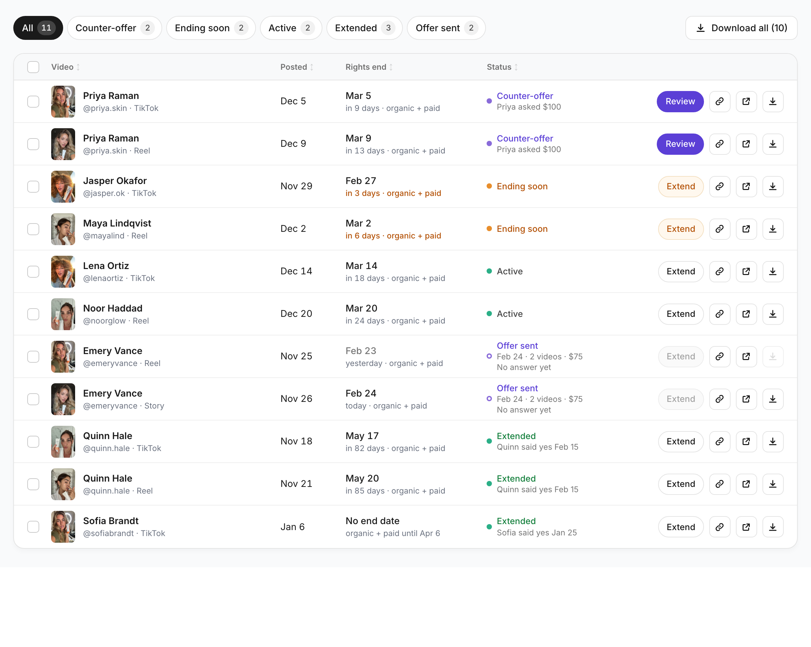
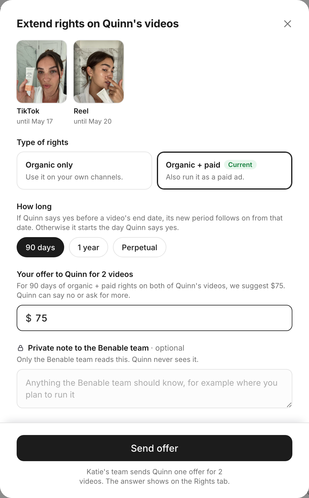
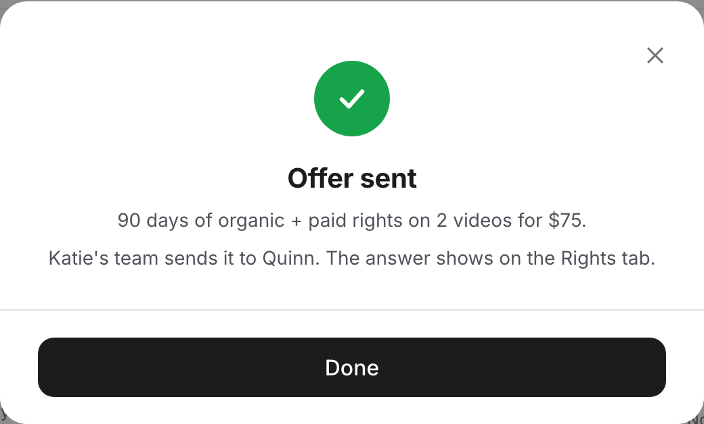
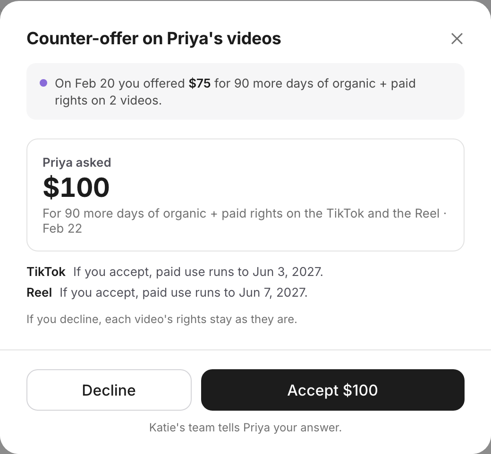
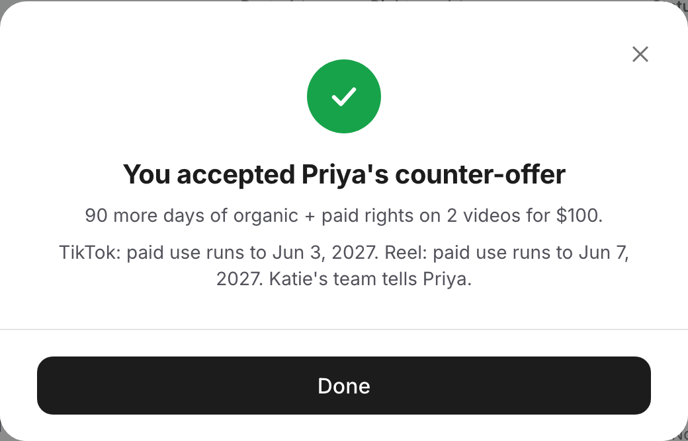
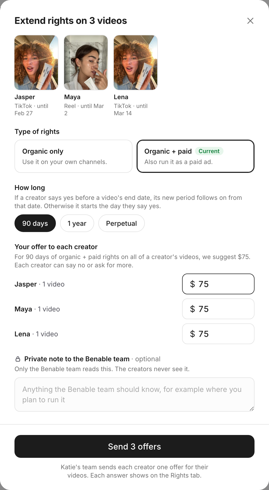
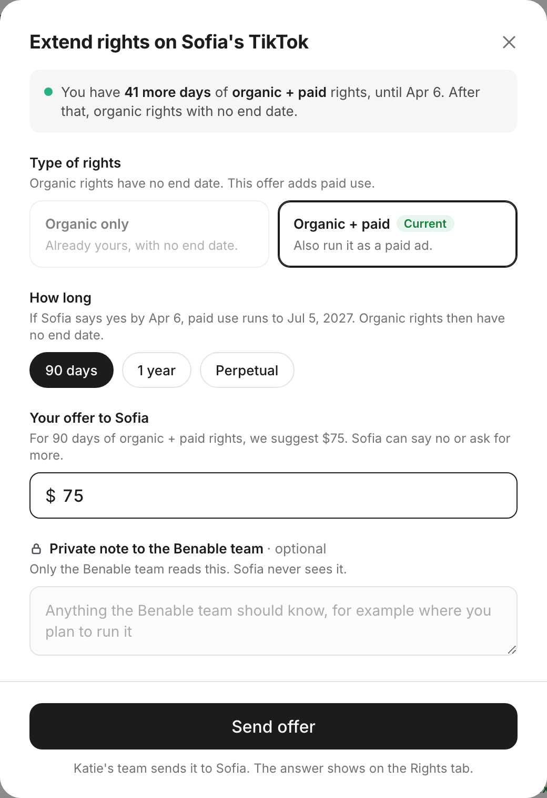
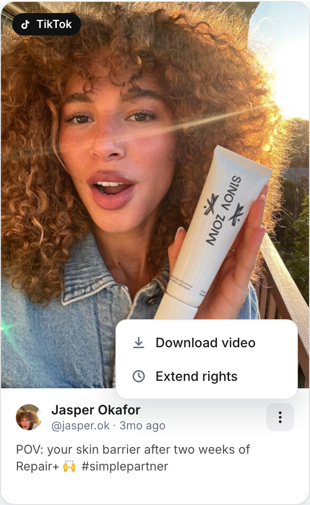
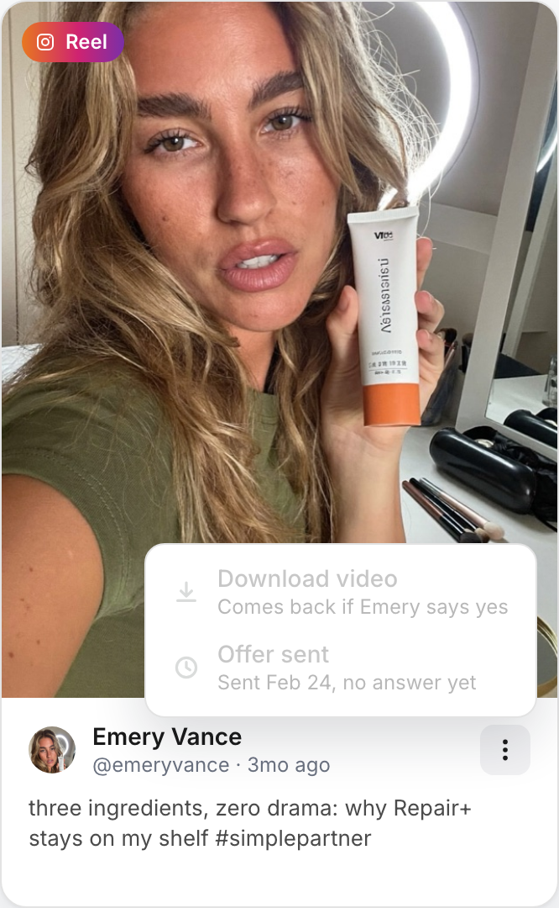
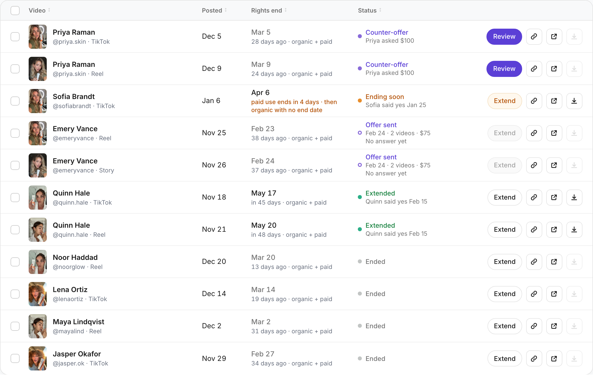

A new Rights tab on the campaign page, next to Dashboard and Content. The brand downloads each creator's video, sees when its usage rights end, and offers the creator more time or paid use. Everything on this page is decided by Julia (and Tony on Oct 2). The prototype is the spec for every screen and every string; this page adds the rules behind them and what the backend needs.
The black bar at the bottom of the prototype is a demo control: it switches the day and lets a creator answer. It is not part of the product (see "Demo only" below).
// per brand (or campaign): Simple { days: 90, type: organic+paid }, basic plan { days: 30, type: organic } periods = [{ start: posted_on, end: posted_on + base.days, type: base.type }] for each accepted offer (a yes, or an accepted counter), in order: Y = accepted_on; last = periods.last if last.end == none and not (offer.type == organic+paid and last.type == organic): skip // nothing follows rights with no end date if offer.type == organic+paid and (last.end == none or Y <= last.end): from = (paid running at Y) ? end of that paid use : Y held = last // what the brand held before this yes cut every period at from add { start: from, end: from + term, type: organic+paid } if term has an end and (held.end == none or held.end > from + term): add { start: from + term, end: held.end, type: held.type } // it runs on after else if Y <= last.end: add { start: last.end, end: last.end + term, type } // follows on else: add { start: Y, end: Y + term, type } // after the end term: 90 days | 1 year (same date next year) | Perpetual (end = none) ends = periods.last.end // none = "No end date" type today = the period live today; on a boundary day paid wins ended = today > ends // checked first; download off ending soon = 0 <= days to end <= 7, or 0 <= days to paid end <= 7 and organic runs on
The same rules as model() in the prototype's surface.html.
The offer prefills with the price for the type and length; the brand can type its own amount. The line under the "Your offer" label, above the amount, says "For 90 days of organic + paid rights on both of Quinn's videos, we suggest $75. Quinn can say no or ask for more." The price is for the creator's whole set.
| 90 days | 1 year | Perpetual | |
|---|---|---|---|
| Organic + paid | $75 | $150 | $200 |
| Organic only | $50 | $100 | $150 |
Adding paid on top of organic with no end date uses the organic + paid row, nothing off.
What the sheet opens on. 90 days, and the type the videos hold now. When their types differ, or a video's organic rights have no end date, it opens on organic + paid. "Current" marks the type the videos hold now; it is hidden when any of them has ended or they hold different types. Changing type or length refills the suggested price. Closing and reopening the same creator's sheet keeps the draft: type, length, amount and note. A sheet for one video opens with what the brand holds ("You have 3 more days of organic + paid rights, until Feb 27."); a sheet for 2 or more videos shows them as small pictures, each with its end date under it.
| Step | Who | What the row shows |
|---|---|---|
| Brand sends the offer | Brand, from Extend | "Offer sent", with "Feb 24 · 2 videos · $75" and "No answer yet" on the line below. A green check page confirms what was offered. Extend is greyed: "Emery has not answered the Feb 24 offer yet." |
| Relayed to the creator | Katie's team, by text for now | Unchanged. The private note goes to the Benable team only; the creator never sees it. |
| Creator says yes | Creator, through Katie's team | "Extended", the new end date, and "Quinn said yes Feb 15". The amount is in the hover. |
| Creator says no | Creator | Back to its status, with "Emery said no Feb 24". Extend is open again. |
| Creator counters | Creator | "Counter-offer" with "Priya asked $100", and Review in Extend's place. Review shows what was offered, what the creator asks, what accepting buys and what declining leaves. |
| Brand accepts the counter | Brand | "Extended" at the counter price, with "You accepted $100 · Feb 24". A green check page confirms it. |
| Brand declines the counter | Brand | Back to its status, with "You declined $100 · Feb 24". Extend is open again. |
Each step covers every video in the creator's set. The hover on a status has the full detail, for example "Quinn said yes Feb 15: 90 days of organic + paid rights on 2 videos at $75."
Extend is on every row. When a new offer cannot go out yet, it is greyed and says why, on hover and on a click.
| Case | What it says |
|---|---|
| An offer to this creator is out | "Emery has not answered the Feb 24 offer yet." |
| An offer is open on another of the creator's videos | "An offer to Quinn is still open on the TikTok." |
| A counter-offer is waiting | Review takes Extend's place. |
| Paid use has no end date | "These rights never end." |
In the extend sheet, a creator's video that cannot be in the offer is named: "Emery's Reel is not in this offer: an offer is already out."
From the prototype, on Feb 24 in the demo. Open the prototype for the live version of each.










Pictures: each row and each small picture in the sheet shows the video's thumbnail. When a video has none, or it fails to load, production's tile for a creator's recent post with no thumbnail shows instead: the soft grey gradient of .draft-recent-post-media with the TikTok or Instagram icon centred in #4d5561 (.draft-recent-post-placeholder).
The backend keeps track of the total each brand owes for extensions (Julia, Oct 6).
In the prototype, Feb 24: Quinn $75 for 2 videos plus Sofia $150 = $225.
Hi Katherine,
Your usage rights on Quinn Hale's videos for Repair+ Holiday Hydration are about to end:
TikTok, rights end Feb 16
Reel, rights end Feb 19
After each date, any ads running that video should be paused, and its file can no longer be downloaded. If you haven't downloaded the files yet, now is a good time.
To keep using a video, extend the rights from the Rights tab: choose how long and make Quinn an offer.
Open the Rights tab
Team Benable
Read from beneble_app at 0efa449c3 (Oct 6). Nothing structured about usage rights exists yet: no rights days, type, start or end, no offers, no download route for videos.
| Piece | Today | What the build needs |
|---|---|---|
| The video and the day it went live | Two records, not linked: the approved file (submission > item > asset, content_url) and the live post (a URL on brand_collab_campaign_live_posts, joined only by assignment_id). submission_items.posted_at exists but nothing in production writes it. The stored dates are on the assignment (live_link_submitted_at, verified_live_at, completed_at); the platform's own post date is only in the scraper DB. | One rights record per delivered video, tied to its file and its live post, with the day the post went live as the start of the clock. |
| Which videos are on the tab | The Content tab's feed (CampaignFeedQuery) merges creator live posts, found content and recs; found content also includes brand mentions outside the campaign and posts from candidate creators. | Only the campaign's delivered videos, posted, one row each. |
| Starting rights | Nothing structured. Only prose: brief.usage_permissions, default "30 days of organic usage rights" plus paid rights "case by case", editable per org. requirements[:usage_rights_days] is read by the admin page but never written. | Days and type per brand: Simple 90, organic + paid; basic plan 30, organic only. Every date derives from it. |
| Downloading a file | No download route for videos: no attachment disposition, no signed download. The brand already sees the raw file URL in the draft review queue, the assignment page and the tracker preview. A signed download with attachment exists for brief and contract PDFs. No zip in production (rubyzip is only pulled in by test gems). | A download for each file and for a selection, and Download all as one zip of the rows on screen whose rights are live. Download stops when rights end and comes back with an extension. |
| Thumbnails | submission_assets.poster_url: a worker grabs one frame (720px) after upload. Failures return quietly, so retries never run and nothing backfills; a poster can stay empty for good. | Show the poster; when it is empty or fails to load, show production's no-thumbnail tile. |
| Offers and answers | Nothing: no table for offers, counters or answers. Katie's team talks to creators in the admin SMS console (/admin/brand_collab/sms, threads linked to organization, campaign and assignment). Slack alerts and AuditLogger exist. | An offer per creator covering a set of videos: type, length, the brand's amount, the counter, the agreed amount, dates, the private note, and the states sent, yes, no, countered, accepted, declined. A way for Katie's team to send it and record the creator's answer. |
| What the brand owes | Creator payments have one row per assignment (unique) and sending one completes the assignment, so it cannot carry extensions as is. Billing creator fees to brands is a manual monthly ledger (LedgerQuery, mark billed). No one-off Stripe charges to brands (no Stripe invoice items). | One line per accepted offer, as in What the brand owes, with a total per brand and per campaign. |
| The 7-day email | Brand emails go through PostmarkMailer with the generic text template. Draft review emails have a delivery table with an idempotency key and status (brand_collab_draft_review_emails); campaign availability emails have their own table (brand_collab_campaign_availability_emails) and a sweeper every 15 minutes. Recipients are the organization's active owners and managers; organizations have no contact field. Daily jobs use sidekiq-cron, registered in each worker file. | A daily job, one email per creator, brands with paid rights only, at Simple to Katherine. |
| Case | What happens |
|---|---|
| The end date itself | The video shows "today" and Ending soon, and download still works. The next day it is Ended and download stops. |
| A yes on the end date | Counts as before the end: the new period follows on from the end date. |
| A yes after the end | The new period starts on the day of the yes. The days in between are not rights. Download comes back. |
| A creator with one ended and one live video | One offer, one price for both. The ended one starts at the yes, the live one follows on from its end. |
| Paid added while paid use is running | More paid follows on from where paid ends. Organic days already bought inside the new paid term become paid and the end date does not move; only organic rights that end after it, or have no end date, run on after it. Example: paid to May 20, organic to Aug 18, 90 more days of paid gives paid to Aug 18. |
| Paid on top of organic with no end date | Paid runs its term from the yes (or after running paid), then organic carries on with no end date. Organic only is greyed. |
| Paid ending before organic | Ending soon in the last 7 days of paid use, the row shows the paid end date in bold, and on that day paid is still on. The 7-day email goes out too. |
| Perpetual organic + paid accepted | "No end date". Extend is greyed: "These rights never end." The video is not in later offers to the creator. |
| An extended video in its last 7 days | Shows Ending soon, not Extended. |
| An ended video with an offer out | Download stays off ("comes back if Emery says yes") until the yes. |
| A creator posts another video while an offer is out | The new video is not in the open offer and cannot get its own. It joins the next offer to that creator. |
| A counter on a 2-video offer | One amount for the set. Accepting records one line owed, at the counter price. |
| The brand declines a counter, or the creator says no | Nothing owed. Extend comes back. What the brand already held stays in force. |
| A new offer after an earlier yes | The earlier yes stays in force and stays owed once. |
| Ticking rows across 3 creators | 3 offers, one price box each; Send is off while any box is $0; the green check page shows the total. |
| A ticked video that cannot take an offer | Named in the sheet: "Emery's Reel is not in this offer: an offer is already out." |
| The offer field | Digits only, up to 6. Changing type or length refills the suggested price. |
| Download all with a filter on | Only the rows on screen whose rights are live. One such row downloads that file; none turns the button off. |
| The tab's orange dot | On for rights ending soon or a counter-offer to answer, shown only while the Dashboard or Content tab is open. A 2-video counter counts once; a row with an offer out does not turn it on. |
live_link_submitted_at or verified_live_at, or the platform's post date when the scraper has it).Prepared by Julia, with Claude, Oct 7. Every item above is decided; the prototype is the reference for layout and copy.